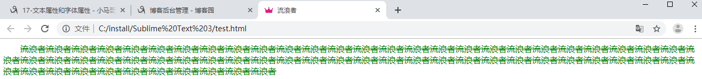
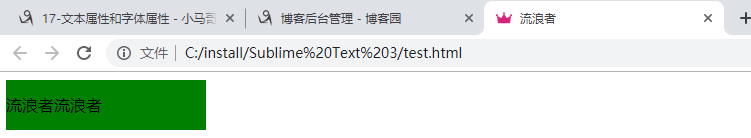
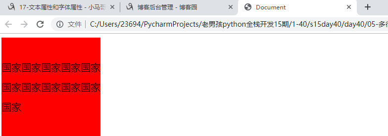
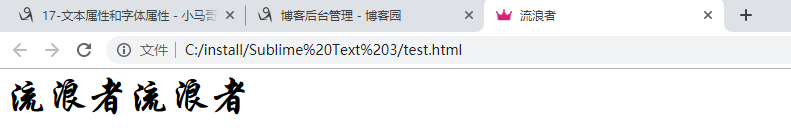

文本对齐
text-align规定元素中文本的水平对齐方式
属性值：none、center、left、right、justify。
文本颜色
color属性
文本首行缩进
text-indent规定文本首行缩进的距离，单位建议使用em。
文本修饰
text-decoration属性规定文本修饰的样式
属性值：none(默认) | underline(下划线) | overline(定义文本上的一条线) | line-through (定义穿过文本下的一条线) | inherit(继承父元素的text-decoration属性的值。)
1 <!DOCTYPE html>
2 <html lang="en">
3 <head>
4 <meta charset="UTF-8">
5 <title>流浪者</title>
6 <style>
7 div{
8 /* text-align: center; */
9 color: green;
10 text-indent: 2em;
11 text-decoration: line-through;
12 }
13 </style>
14
15 </head>
16 <body>
17
18 <div>流浪者流浪者流浪者流浪者流浪者流浪者流浪者流浪者流浪者流浪者流浪者流浪者流浪者流浪者流浪者流浪者流浪者流浪者流浪者流浪者流浪者流浪者流浪者流浪者流浪者流浪者流浪者流浪者流浪者流浪者流浪者流浪者流浪者流浪者流浪者流浪者流浪者流浪者流浪者流浪者流浪者流浪者流浪者流浪者流浪者流浪者流浪者流浪者流浪者流浪者流浪者流浪者流浪者流浪者流浪者流浪者流浪者流浪者流浪者流浪者流浪者流浪者流浪者流浪者
19
20 </div>
21
22 </body>
23 </html>
行高
line-height属性规定文本的行高
1 <!DOCTYPE html>
2 <html lang="en">
3 <head>
4 <meta charset="UTF-8">
5 <title>流浪者</title>
6 <style>
7 div{
8 width: 200px;
9 height: 50px;
10 line-height: 50px;
11 background-color: green;
12 }
13 </style>
14
15 </head>
16 <body>
17
18 <div>流浪者流浪者</div>
19
20 </body>
21 </html>
第一步，一个宽度300*300的盒子，看盒子中一共显示了几行文字，假如是5行，再看一下行高，如果行高是line-height:30px; 那么就知道行高*5=150px
第二步，让(盒子的高度-150px)/2=75;那么设置盒子的padding-top:75px;同时保证盒子的高度为300px,那么高度改为225px;
1 <!DOCTYPE html>
2 <html lang="en">
3 <head>
4 <meta charset="UTF-8">
5 <title>Document</title>
6 <style>
7 div{
8 width: 200px;
9 height: 160px;
10 font-size: 20px;
11 background-color: red;
12 line-height: 40px;
13 padding-top: 40px;
14 }
15 </style>
16 </head>
17 <body>
18 <div>国家国家国家国家国家国家国家国家国家国家国家</div>
19
20 </body>
21 </html>

字体大小
font-size规定字体的大小，如果设置成inherit表示继承父元素的字体。
字体粗细
font-weight表示字体粗细
属性值：none(默认值，标准粗细) | bold(粗体) | border(更粗）| lighter(更细) | 100~900（设置具体粗细，400等同于normal，而700等同于bold）| inherit（继承父元素字体的粗细值）
字体系列
font-family
font-family: "Microsoft Yahei", "微软雅黑", "Arial", sans-serif如果浏览器不支持第一个字体，则会尝试下一个。浏览器会使用它可识别的第一个值。如果都不支持则显示宋体
1 <!DOCTYPE html>
2 <html lang="en">
3 <head>
4 <meta charset="UTF-8">
5 <title>流浪者</title>
6 <style>
7 div{
8 font-size: 40px;
9 font-weight: bold;
10 font-family: "华文行楷";
11 }
12 </style>
13
14 </head>
15 <body>
16
17 <div>流浪者流浪者</div>
18
19 </body>
20 </html>

vertical-align
这个属性设置元素的垂直对齐方式
属性值：
baseline：默认
top：
bottom：
middle：
作者：流浪者
日期：2019-08-31